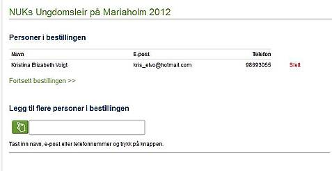

Hvordan bruke Checkin
1. På siden for det aktuelle arrangementet finner du en del praktisk informasjon. Les dette før du går videre til påmeldingen!
2. Til høyre i skjermbildet finner du et felt som heter “vanlig påmelding”. Klikk her for å melde deg på.
3. Nå vil du få to valg:
A) Om du har brukt Checkin tidligere, logger du inn med email og passord.
B) Hvis du ikke har brukt Checkin før, klikker du “fortsett med bestillingen” under “Jeg er ny på Checkin”. I neste skjermbilde blir du nå bedt om å fylle ut et skjema med personlige opplysninger, samt å lage et passord. Ta vare på passordet – du får bruk for det neste gang du vil melde deg på et arrangement.
4. Dersom du vil melde på flere personer samtidig er dette mulig ved å følge anvisningene under “legg til flere personer i bestillingen”. Er personen du vil melde på allerede registrert i Checkin vil dette komme opp. Hvis ikke må du registrere opplysninger om vedkommende. Du vil få opp en liste over alle som skal meldes på etter hvert som du legger dem inn. Du kan fjerne en person fra bestillingen ved å klikke “slett” til høyre for navnet. (Hvis du kun skal melde på andre og ikke deg selv, klikker du “slett” til høyre for ditt eget navn). Når du er ferdig med å legge til alle som skal meldes på går du videre ved å klikke “fortsett bestillingen” (grønn skrift).
5. Vanligvis opererer vi med forskjellige priser for NUK-medlemmer og ikke-medlemmer. Du skal nå velge hvilken kategori de forskjellige personene bestillingen gjelder for skal meldes på under. Når dette er gjort kommer du automatisk videre til neste bilde. Her blir du bedt om å gi opplysninger om fødselsdato, eventuelle allergier o.l. Hvilke opplysninger du blir bedt om å gi kan variere fra arrangement til arrangement. OBS!! Disse feltene fylles ut kun en gang for hele bestillingen, og gjelder da alle personene som meldes på. Hvis du skal melde på flere enn én person, pass på å skrive inn når de forskjellige er født i fødselsdatofeltet, og vær tydelig på hvem som har hvilke allergier. Når du er ferdig, trykk “gå videre” nederst på siden.
6. Nå ser du en liste over opplysningene du har gitt, og beløpet som skal betales. Under “velg foretrukket betalingsmetode” merker du av for “VISA/Mastercard”. Nå velger du hvilken korttype du ønsker å betale med, og taster inn kortdetaljene. Videre er det viktig at du leser igjennom betingelsene for påmeldingen. At du godtar betingelsene er en forutsetning for å fortsette påmeldingen. Klikk “bekreft bestilling”.
Du kan når som helst underveis avbryte bestillingen ved å klikke den røde teksten øverst til venstre i skjermbildet.